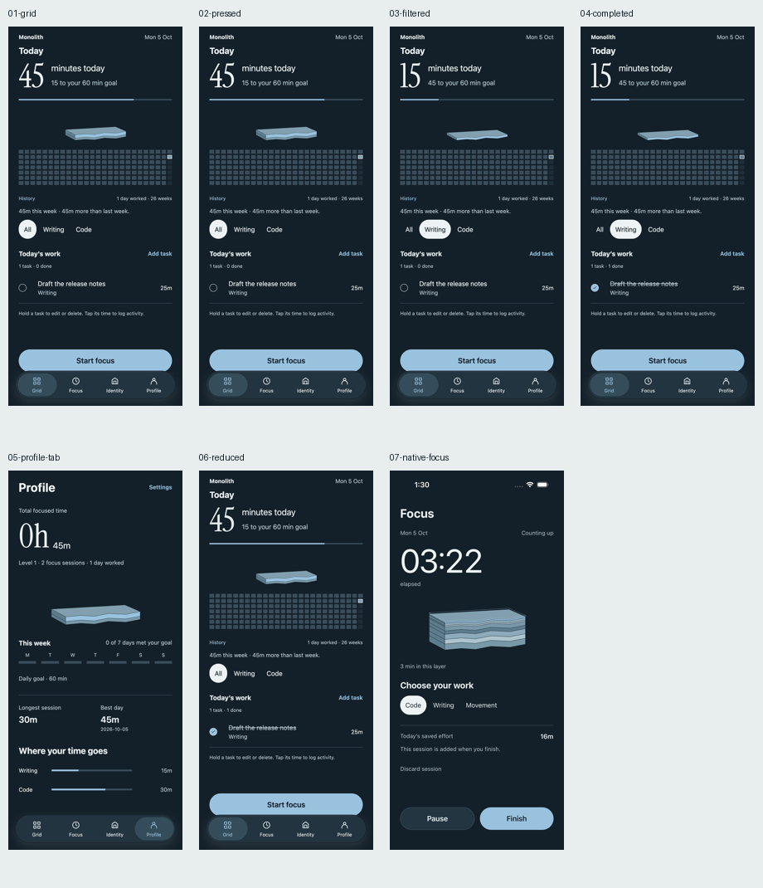

Actual app capture with isolated synthetic records: press feedback, filter total45→15, goal75%→25%, task completion, tab selection and reduced-motion fallback. Exact totals update immediately; the display settles. Native focus screenshot preserves the active session.
Physical haptics and native intermediate spring frames remain unverified.
Interaction checks